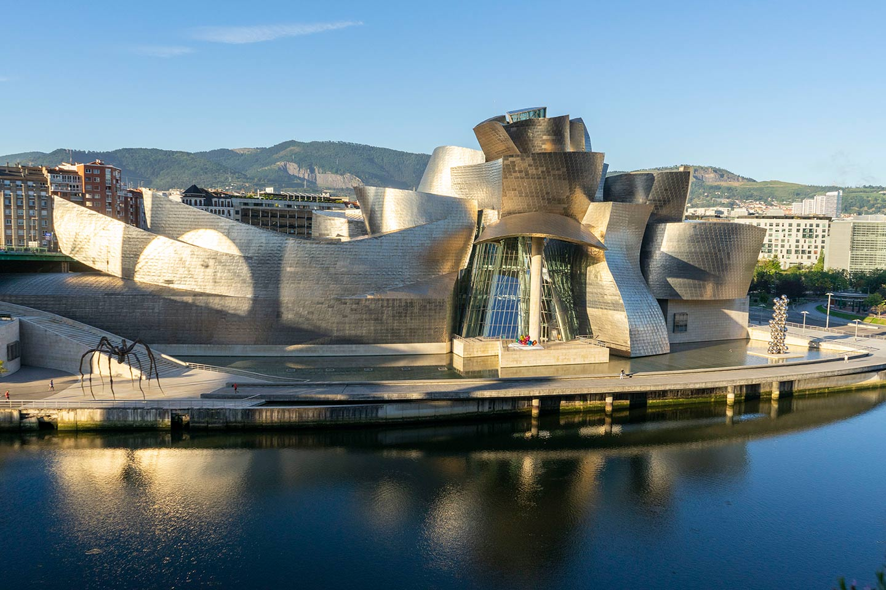
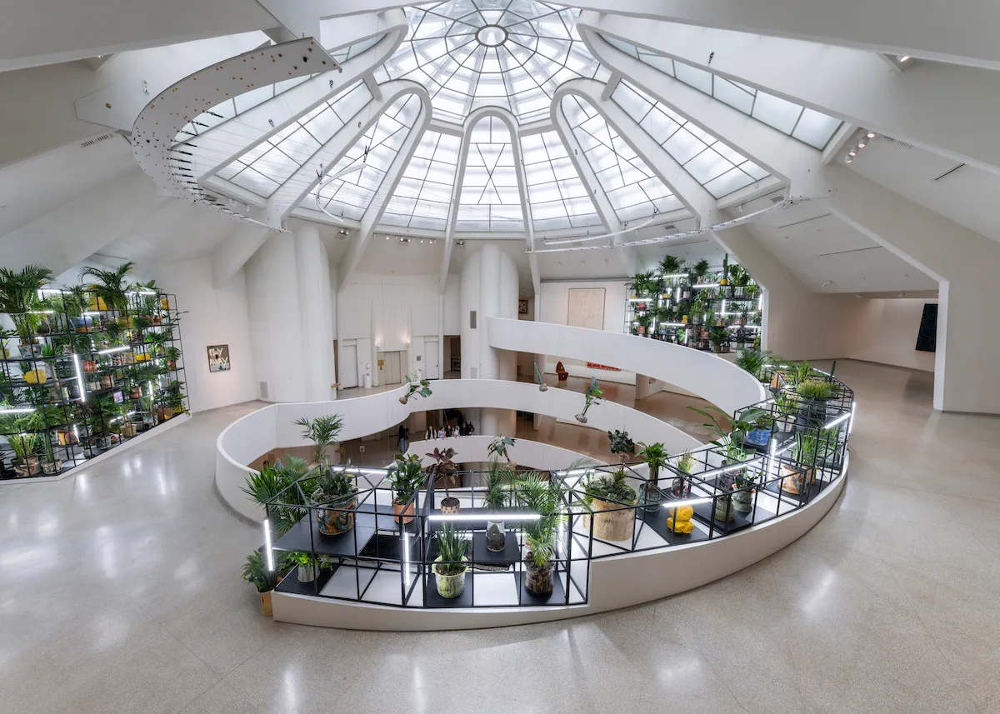

Experience Frank Lloyd Wright’s iconic architectural masterpiece, home to innovative modern and contemporary art exhibitions in New York City.
The Solomon R. Guggenheim Museum, often called The Guggenheim, is an art museum situated at 1071 Fifth Avenue between 88th and 89th Streets on the Upper East Side of Manhattan in New York City. Established by the Solomon R. Guggenheim Foundation in 1939, the museum is an internationally recognized institution that hosts a permanent collection encompassing Impressionist, Post-Impressionist, early Modern, and contemporary art, alongside special exhibitions. The museum’s structure, designed by Frank Lloyd Wright, makes it stand out against the "flat facades of the skyscrapers around it" and serves as a major monument to modern architecture and art museums in the bustling metropolis.

The museum traces its origins back to 1939 when it was founded as the Museum of Non-Objective Painting. Solomon R. Guggenheim, a member of a wealthy mining family, began collecting art in the 1890s but shifted his focus entirely to European avant-garde abstract art, or "non-objective art," after meeting artist and museum director Hilla von Rebay in 1926. Rebay guided the initial collection, intending for the museum exclusively to house non-objective paintings. By the early 1940s, the burgeoning collection made the need for a permanent, dedicated venue apparent. In 1943, Guggenheim and Rebay commissioned Frank Lloyd Wright to design a structure Rebay envisioned as a "temple of spirit, a monument!". It took Wright 15 years, involving a series of difficulties and over 700 sketches, to design and complete the structure. The museum was completed in 1959, six months after Wright's death, and had been renamed the Solomon R. Guggenheim Museum in 1952. Subsequent directors expanded the collection to include "objective" works and works of older artwork, moving beyond Rebay’s initial philosophy.
The museum is particularly infamous for the controversy surrounding Frank Lloyd Wright’s unconventional design. The structure consists primarily of a six-story, bowl-shaped main gallery featuring a helical ramp that extends along its perimeter. Wright’s modernist building was immediately polarizing; critics and many artists worried that the curved walls, which were tilted at a 97-degree angle, would make it difficult to properly hang and display art. The building was unfavorably compared to a "giant corkscrew," a "washing machine," a "marshmallow," and a "huge garage". Art critic John Canaday contended that the design fundamentally defeated the museum’s function, arguing that the spiral rotunda acted as a "kind of straight jacket for the visitor" and that the paintings looked like "intruders" when suspended from metal bars protruding from the sloped walls. Nonetheless, Wright defended his vision, believing the "organic" vertical design was well-suited to avant-garde art and would allow art to be viewed "through an open window".
The Guggenheim holds immense significance to NYC due to its role as a cultural institution and its architectural impact. It stands on the Museum Mile section of Fifth Avenue, overlooking Central Park. The building is recognized as a landmark work of 20th-century architecture, designated a New York City Landmark (1990) and a National Historic Landmark (2008). Its international significance was cemented in 2019 when it was added to the UNESCO World Heritage List as part of "The 20th-Century Architecture of Frank Lloyd Wright". Retrospective commentary suggests that Wright's highly expressive and unique modernist building was a "catalyst for change" in museum design, paving the way for intensely personal museum structures.
